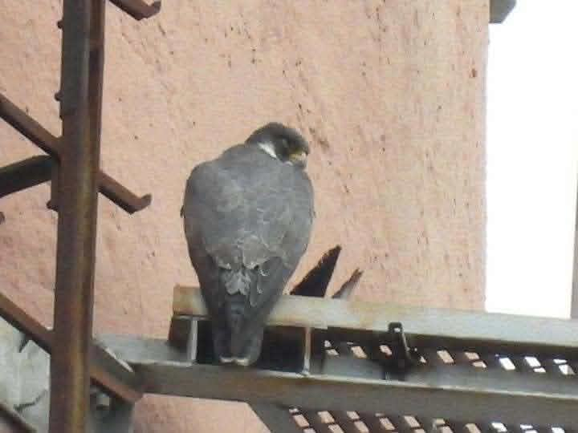

Aktualności
Najnowsze newsy prosto z EC2

22 września 2026
JHM Development opublikował wizualizacje "nowego" EC2
JHM Development opublikował wizualizacje planowanej inwestycji na terenie dawnej Elektrociepłowni EC2. Publikacja pojawiła się przy okazji targów Expo Real w Monachium i pokazuje koncepcję nowego osiedla oraz zagospodarowania terenu elektrociepłowni.
Wizualizacje — najpewniej wygenerowane przez AI — wyglądają obrzydliwie. Są sterylne, bez charakteru i kompletnie nie oddają ducha tego miejsca. To nie jest przyszłość, na jaką zasługuje EC2. Będziemy przyglądać się dalszym działaniom inwestora i informować o nich na bieżąco.
fot. JHM Development

22 września 2026
Zaplanowane wyburzanie kominów EC2
Ogłoszone zostały plany wyburzenia kominów dawnej Elektrociepłowni EC2 przy ul. Wróblewskiego w Łodzi. Na najwyższym kominie, liczącym około 160 metrów, przygotowano już otwory pod ładunki wyburzeniowe. Decyzją wojewódzkiego konserwatora zabytków obiekty zostaną rozebrane ze względu na zły stan techniczny.
Dla Klubu Przyjaciół EC2 to smutny moment – kominy przez dziesięciolecia były symbolem elektrociepłowni i częścią łódzkiego krajobrazu. Będziemy dokumentować ich ostatnie dni oraz zachęcamy członków i sympatyków do dzielenia się zdjęciami i wspomnieniami.
fot. Klub Przyjaciół EC2

29 sierpnia 2026
Sokoły wędrowne na kominie EC2!
Na kominie Elektrociepłowni EC2 zaobserwowano sokoły wędrowne. Ptaki, które w Polsce objęte są ścisłą ochroną gatunkową, zostały uchwycone na zdjęciach. Sokoły wędrowne osiągają w locie nurkowym prędkość przekraczającą 300 km/h, co czyni je najszybszymi zwierzętami na świecie.
Zdjęcia przedstawiają ptaki siedzące na jednym z kominów elektrociepłowni. Na razie nie wiadomo, czy był to jedynie przystanek w trakcie wędrówki, czy też sokoły wybrały to miejsce na dłuższy pobyt.
fot. Ewelina Bogatek